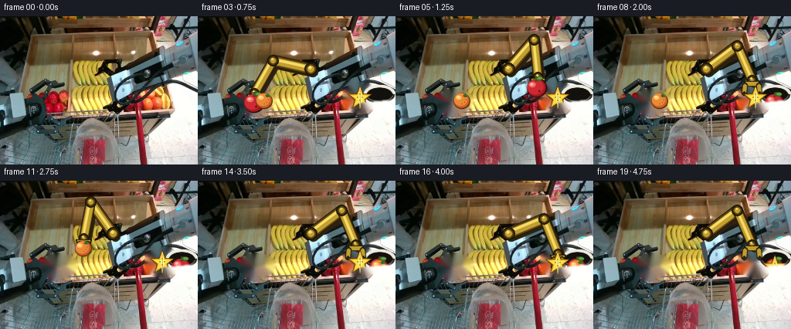
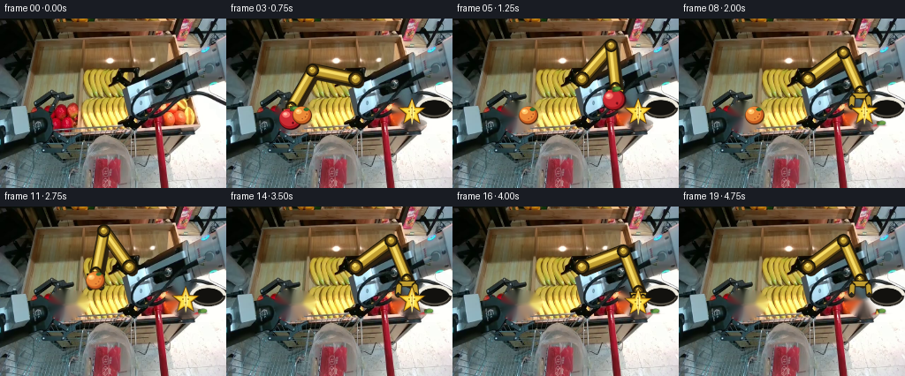
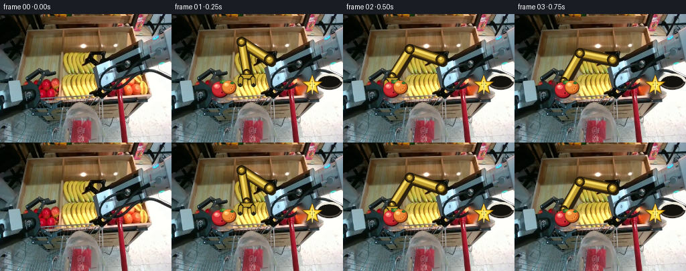
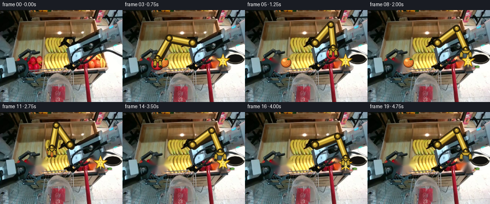
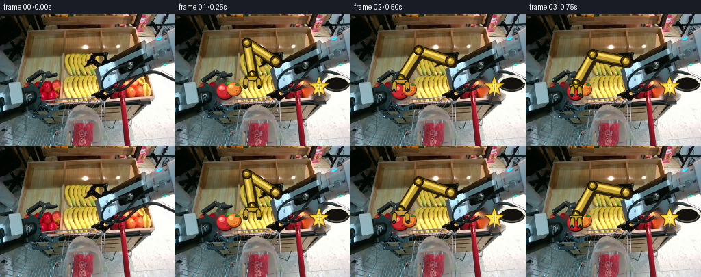

CODING AGENTS AS PIXEL WORLD MODELS
traex/DeepSeek-V4.1-Flash · common50_0000
点击播放 · 原生 RGB 像素
逐轮保存的候选
回放视频、检查图与代码变化。
每份候选均可单独播放。实际图片检查记录在下方工具轨迹中。
候选 01播放与检查图
点击播放 · 原生 RGB 像素

展开代码变化
--- 上一保存版本
+++ 本次保存版本
@@ -0,0 +1,376 @@
+from __future__ import annotations
+
+import math
+import subprocess
+from pathlib import Path
+
+import cv2
+import imageio_ffmpeg
+import numpy as np
+from PIL import Image, ImageDraw
+
+import artifact_io
+
+
+CASE_DIR = Path(__file__).resolve().parent
+WIDTH = 256
+HEIGHT = 192
+FRAMES = 20
+FPS = 4
+
+SHOULDER = np.array([146.0, 68.0])
+UPPER_ARM = 50.0
+FOREARM = 48.0
+
+GOLD = (193, 158, 48)
+GOLD_LIGHT = (247, 221, 104)
+GOLD_DARK = (91, 65, 17)
+OUTLINE = (29, 23, 9)
+STEEL = (82, 91, 88)
+
+APPLE_HOME = np.array([73.0, 111.0])
+ORANGE_HOME = np.array([86.0, 109.0])
+STAR_HOME = np.array([210.0, 106.0])
+BAG_CENTER = np.array([235.0, 101.0])
+
+# Each pose is [wrist_x, wrist_y, gripper_closed].
+POSES = {
+ 0: [128.0, 88.0, 0],
+ 1: [112.0, 88.0, 0],
+ 2: [73.0, 92.0, 0],
+ 3: [73.0, 99.0, 1],
+ 4: [102.0, 71.0, 1],
+ 5: [184.0, 78.0, 1],
+ 6: [232.0, 91.0, 1],
+ 7: [235.0, 107.0, 1],
+ 8: [205.0, 82.0, 0],
+ 9: [96.0, 89.0, 0],
+ 10: [86.0, 97.0, 1],
+ 11: [108.0, 74.0, 1],
+ 12: [184.0, 78.0, 1],
+ 13: [234.0, 102.0, 1],
+ 14: [204.0, 82.0, 0],
+ 15: [195.0, 87.0, 0],
+ 16: [210.0, 94.0, 1],
+ 17: [225.0, 79.0, 1],
+ 18: [235.0, 100.0, 1],
+ 19: [205.0, 82.0, 0],
+}
+
+
+def _rgba_sprite(width: int, height: int, draw_fn) -> np.ndarray:
+ scale = 4
+ image = Image.new("RGBA", (width * scale, height * scale), (0, 0, 0, 0))
+ draw = ImageDraw.Draw(image)
+ draw_fn(draw, scale)
+ return np.asarray(image.resize((width, height), Image.Resampling.LANCZOS))
+
+
+def make_apple_sprite() -> np.ndarray:
+ def draw(d: ImageDraw.ImageDraw, s: int) -> None:
+ def box(cx: float, cy: float, rx: float, ry: float):
+ return tuple(int(v * s) for v in (cx - rx, cy - ry, cx + rx, cy + ry))
+
+ d.ellipse(box(15, 17, 13, 12), fill=(52, 8, 12, 255))
+ d.ellipse(box(14.2, 16.3, 12.2, 11.2), fill=(166, 25, 33, 255))
+ d.ellipse(box(13.2, 15.1, 10.4, 9.8), fill=(205, 43, 51, 255))
+ d.ellipse(box(9.7, 11.8, 4.3, 3.4), fill=(247, 112, 105, 255))
+ d.ellipse(box(8.8, 11.1, 2.0, 1.5), fill=(255, 188, 164, 255))
+ d.rectangle((14 * s, 2 * s, 17 * s, 8 * s), fill=(83, 44, 21, 255))
+ d.ellipse(box(19.2, 5.2, 5.0, 2.8), fill=(51, 102, 43, 255))
+ d.ellipse(box(20.5, 4.7, 3.3, 1.7), fill=(106, 157, 65, 255))
+ d.ellipse(box(17.5, 21.2, 1.2, 1.4), fill=(105, 8, 19, 255))
+
+ return _rgba_sprite(31, 31, draw)
+
+
+def make_orange_sprite() -> np.ndarray:
+ def draw(d: ImageDraw.ImageDraw, s: int) -> None:
+ def box(cx: float, cy: float, rx: float, ry: float):
+ return tuple(int(v * s) for v in (cx - rx, cy - ry, cx + rx, cy + ry))
+
+ d.ellipse(box(12, 12.8, 10.8, 10.2), fill=(92, 43, 13, 255))
+ d.ellipse(box(11.6, 12.2, 10.0, 9.4), fill=(202, 96, 35, 255))
+ d.ellipse(box(10.7, 11.2, 8.5, 8.0), fill=(235, 137, 55, 255))
+ d.ellipse(box(7.9, 8.3, 3.5, 2.8), fill=(253, 196, 103, 255))
+ d.ellipse(box(7.1, 7.6, 1.6, 1.1), fill=(255, 231, 164, 255))
+ d.ellipse(box(16.6, 6.0, 3.0, 1.8), fill=(57, 107, 40, 255))
+ for x, y, radius in ((15.5, 14.5, 0.7), (17.2, 11.3, 0.6), (12.0, 16.5, 0.5)):
+ d.ellipse(box(x, y, radius, radius), fill=(160, 68, 23, 255))
+
+ return _rgba_sprite(24, 24, draw)
+
+
+def make_star_sprite() -> np.ndarray:
+ def star_points(cx: float, cy: float, outer: float, inner: float):
+ points = []
+ for index in range(10):
+ angle = -math.pi / 2 + index * math.pi / 5
+ radius = outer if index % 2 == 0 else inner
+ points.append((cx + math.cos(angle) * radius, cy + math.sin(angle) * radius))
+ return points
+
+ def draw(d: ImageDraw.ImageDraw, s: int) -> None:
+ outer = [(int(x * s), int(y * s)) for x, y in star_points(18, 18, 16.5, 7.4)]
+ middle = [(int(x * s), int(y * s)) for x, y in star_points(18, 18, 14.6, 6.2)]
+ inner = [(int(x * s), int(y * s)) for x, y in star_points(18, 18, 11.2, 4.9)]
+ d.polygon(outer, fill=(84, 52, 8, 255))
+ d.polygon(middle, fill=(225, 170, 30, 255))
+ d.polygon(inner, fill=(250, 224, 75, 255))
+ ridge = [(18 * s, 4 * s), (21 * s, 18 * s), (18 * s, 32 * s),
+ (16 * s, 18 * s)]
+ d.polygon(ridge, fill=(255, 242, 135, 255))
+ d.line([(18 * s, 7 * s), (18 * s, 28 * s)], fill=(190, 127, 17, 255), width=max(1, s // 2))
+ for x, y in ((18, 13), (18, 21), (15, 17), (21, 17)):
+ d.ellipse((int((x - 0.6) * s), int((y - 0.6) * s),
+ int((x + 0.6) * s), int((y + 0.6) * s)),
+ fill=(121, 77, 9, 255))
+
+ return _rgba_sprite(36, 36, draw)
+
+
+APPLE = make_apple_sprite()
+ORANGE = make_orange_sprite()
+STAR = make_star_sprite()
+
+
+def make_clean_background(source: np.ndarray) -> np.ndarray:
+ mask = np.zeros((HEIGHT, WIDTH), np.uint8)
+ cv2.ellipse(mask, (73, 111), (19, 18), 0, 0, 360, 255, -1)
+ cv2.ellipse(mask, (87, 109), (13, 14), 0, 0, 360, 255, -1)
+ cv2.ellipse(mask, (210, 105), (23, 20), -8, 0, 360, 255, -1)
+ cleaned = cv2.inpaint(cv2.cvtColor(source, cv2.COLOR_RGB2BGR), mask, 5,
+ cv2.INPAINT_TELEA)
+ return cv2.cvtColor(cleaned, cv2.COLOR_BGR2RGB)
+
+
+def blend_rgba(frame: np.ndarray, sprite: np.ndarray, center: tuple[float, float],
+ angle_degrees: float = 0.0) -> None:
+ h, w = sprite.shape[:2]
+ if angle_degrees:
+ scale = 1.0
+ matrix = cv2.getRotationMatrix2D((w / 2.0, h / 2.0), angle_degrees, scale)
+ sprite = cv2.warpAffine(sprite, matrix, (w, h), flags=cv2.INTER_LINEAR,
+ borderMode=cv2.BORDER_CONSTANT,
+ borderValue=(0, 0, 0, 0))
+ cx, cy = center
+ x0 = int(round(cx - w / 2.0))
+ y0 = int(round(cy - h / 2.0))
+ x1 = x0 + w
+ y1 = y0 + h
+ sx0 = max(0, -x0)
+ sy0 = max(0, -y0)
+ sx1 = w - max(0, x1 - WIDTH)
+ sy1 = h - max(0, y1 - HEIGHT)
+ if sx1 <= sx0 or sy1 <= sy0:
+ return
+ dst = frame[max(0, y0):min(HEIGHT, y1), max(0, x0):min(WIDTH, x1)]
+ src = sprite[sy0:sy1, sx0:sx1]
+ alpha = src[:, :, 3:4].astype(np.float32) / 255.0
+ dst[:] = np.rint(src[:, :, :3].astype(np.float32) * alpha +
+ dst.astype(np.float32) * (1.0 - alpha)).astype(np.uint8)
+
+
+def draw_shadow(frame: np.ndarray, center: np.ndarray, radius: int,
+ strength: float = 0.28) -> None:
+ overlay = frame.copy()
+ center_i = tuple(np.rint(center + np.array([2, radius - 2])).astype(int))
+ cv2.ellipse(overlay, center_i, (radius, max(2, radius // 3)), 0, 0, 360,
+ (28, 24, 18), -1, cv2.LINE_AA)
+ cv2.addWeighted(overlay, strength, frame, 1.0 - strength, 0, frame)
+
+
+def solve_ik(target: np.ndarray) -> tuple[np.ndarray, np.ndarray]:
+ delta = target - SHOULDER
+ distance = float(np.linalg.norm(delta))
+ distance = float(np.clip(distance, abs(UPPER_ARM - FOREARM) + 1.0,
+ UPPER_ARM + FOREARM - 0.2))
+ direction = delta / max(float(np.linalg.norm(delta)), 1e-6)
+ along = (UPPER_ARM ** 2 - FOREARM ** 2 + distance ** 2) / (2.0 * distance)
+ height = math.sqrt(max(0.0, UPPER_ARM ** 2 - along ** 2))
+ base = SHOULDER + direction * along
+ perpendicular = np.array([-direction[1], direction[0]])
+ candidate_a = base + perpendicular * height
+ candidate_b = base - perpendicular * height
+ elbow = candidate_a if candidate_a[1] <= candidate_b[1] else candidate_b
+ return elbow, target
+
+
+def draw_arm(frame: np.ndarray, wrist: np.ndarray, closed: bool) -> None:
+ elbow, wrist = solve_ik(wrist)
+ shoulder_i = tuple(np.rint(SHOULDER).astype(int))
+ elbow_i = tuple(np.rint(elbow).astype(int))
+ wrist_i = tuple(np.rint(wrist).astype(int))
+
+ # The arm casts a restrained shadow against the fixed background.
+ shadow_offset = np.array([3, 4], dtype=int)
+ cv2.line(frame, tuple(SHOULDER.astype(int) + shadow_offset),
+ tuple(elbow.astype(int) + shadow_offset), (45, 34, 17), 12, cv2.LINE_AA)
+ cv2.line(frame, tuple(elbow.astype(int) + shadow_offset),
+ tuple(wrist.astype(int) + shadow_offset), (45, 34, 17), 11, cv2.LINE_AA)
+
+ for start, end, width in ((shoulder_i, elbow_i, 13), (elbow_i, wrist_i, 12)):
+ cv2.line(frame, start, end, OUTLINE, width, cv2.LINE_AA)
+ cv2.line(frame, start, end, GOLD_DARK, width - 2, cv2.LINE_AA)
+ cv2.line(frame, start, end, GOLD, width - 5, cv2.LINE_AA)
+ offset = np.array([-1, -2])
+ cv2.line(frame, tuple(np.array(start) + offset),
+ tuple(np.array(end) + offset), GOLD_LIGHT, 2, cv2.LINE_AA)
+
+ for point, radius in ((SHOULDER, 8), (elbow, 7), (wrist, 6)):
+ point_i = tuple(np.rint(point).astype(int))
+ cv2.circle(frame, point_i, radius, OUTLINE, -1, cv2.LINE_AA)
+ cv2.circle(frame, point_i, radius - 2, GOLD_DARK, -1, cv2.LINE_AA)
+ cv2.circle(frame, point_i, radius - 4, GOLD, -1, cv2.LINE_AA)
+ cv2.circle(frame, tuple(np.array(point_i) + np.array([-1, -2])),
+ max(1, radius - 6), GOLD_LIGHT, -1, cv2.LINE_AA)
+
+ wx, wy = wrist_i
+ palm = np.array([[wx - 10, wy + 2], [wx + 10, wy + 2],
+ [wx + 8, wy + 8], [wx - 8, wy + 8]], dtype=np.int32)
+ cv2.fillConvexPoly(frame, palm, OUTLINE, cv2.LINE_AA)
+ palm_inner = np.array([[wx - 8, wy + 3], [wx + 8, wy + 3],
+ [wx + 6, wy + 7], [wx - 6, wy + 7]], dtype=np.int32)
+ cv2.fillConvexPoly(frame, palm_inner, GOLD, cv2.LINE_AA)
+
+ opening = 5 if closed else 9
+ left_top = (wx - opening, wy + 7)
+ right_top = (wx + opening, wy + 7)
+ left_tip = (wx - opening - 1, wy + 17)
+ right_tip = (wx + opening + 1, wy + 17)
+ for top, tip in ((left_top, left_tip), (right_top, right_tip)):
+ cv2.line(frame, top, tip, OUTLINE, 6, cv2.LINE_AA)
+ cv2.line(frame, top, tip, GOLD, 3, cv2.LINE_AA)
+ cv2.circle(frame, tip, 2, (39, 37, 31), -1, cv2.LINE_AA)
+
+
+def draw_bag_opening(frame: np.ndarray) -> None:
+ center = tuple(BAG_CENTER.astype(int))
+ cv2.ellipse(frame, center, (19, 11), 0, 0, 360, (42, 38, 31), -1, cv2.LINE_AA)
+ cv2.ellipse(frame, center, (17, 9), 0, 0, 360, (18, 17, 14), -1, cv2.LINE_AA)
+ cv2.ellipse(frame, center, (19, 11), 0, 190, 350, (238, 235, 222), 2, cv2.LINE_AA)
+ cv2.ellipse(frame, center, (17, 9), 0, 10, 165, (116, 110, 96), 1, cv2.LINE_AA)
+
+
+def object_positions(frame_index: int) -> tuple[np.ndarray, np.ndarray, np.ndarray]:
+ pose = np.asarray(POSES[frame_index][:2], dtype=float)
+
+ if frame_index <= 2:
+ apple = APPLE_HOME.copy()
+ elif frame_index <= 7:
+ apple = pose + np.array([0.0, 13.0])
+ else:
+ apple = np.array([235.0, 127.0])
+
+ if frame_index <= 9:
+ orange = ORANGE_HOME.copy()
+ elif frame_index <= 13:
+ orange = pose + np.array([0.0, 13.0])
+ else:
+ orange = np.array([235.0, 129.0])
+
+ if frame_index <= 15:
+ star = STAR_HOME.copy()
+ elif frame_index <= 18:
+ star = pose + np.array([0.0, 13.0])
+ else:
+ star = np.array([235.0, 131.0])
+ return apple, orange, star
+
+
+def draw_objects(frame: np.ndarray, apple: np.ndarray, orange: np.ndarray,
+ star: np.ndarray, frame_index: int) -> None:
+ for name, center, sprite, radius in (
+ ("apple", apple, APPLE, 12),
+ ("orange", orange, ORANGE, 9),
+ ("star", star, STAR, 15),
+ ):
+ hidden = (
+ (name == "apple" and frame_index >= 8) or
+ (name == "orange" and frame_index >= 14) or
+ (name == "star" and frame_index >= 19)
+ )
+ if hidden:
+ # Keep a small colored glint visible at the mouth of the bag.
+ center = np.array([235.0, 112.0])
+ blend_rgba(frame, sprite, tuple(center), 0)
+ else:
+ angle = 0.0
+ if name == "apple" and frame_index >= 3:
+ angle = (frame_index - 3) * 4.0
+ elif name == "orange" and frame_index >= 10:
+ angle = (frame_index - 10) * 7.0
+ elif name == "star" and frame_index >= 16:
+ angle = (frame_index - 16) * 8.0
+ blend_rgba(frame, sprite, tuple(center), angle)
+
+
+def bag_front_mask() -> np.ndarray:
+ mask = np.zeros((HEIGHT, WIDTH), np.uint8)
+ polygon = np.array([[211, 112], [255, 108], [255, 155], [211, 155]], np.int32)
+ cv2.fillPoly(mask, [polygon], 255)
+ mask = cv2.GaussianBlur(mask, (5, 5), 0)
+ return mask.astype(np.float32) / 255.0
+
+
+def render_frames(source: np.ndarray, clean: np.ndarray) -> np.ndarray:
+ front_alpha = bag_front_mask()
+ frames = np.empty((FRAMES, HEIGHT, WIDTH, 3), dtype=np.uint8)
+ for frame_index in range(FRAMES):
+ if frame_index == 0:
+ frames[frame_index] = source
+ continue
+
+ frame = clean.copy()
+ draw_bag_opening(frame)
+ wrist = np.asarray(POSES[frame_index][:2], dtype=float)
+ closed = bool(POSES[frame_index][2])
+ draw_arm(frame, wrist, closed)
+
+ apple, orange, star = object_positions(frame_index)
+ if frame_index <= 2:
+ draw_shadow(frame, apple, 12)
+ if frame_index <= 9:
+ draw_shadow(frame, orange, 8)
+ if frame_index <= 15:
+ draw_shadow(frame, star, 14)
+ draw_objects(frame, apple, orange, star, frame_index)
+
+ # The bag's front panel occludes objects as they settle into the bag.
+ front = clean.astype(np.float32)
+ alpha = front_alpha[:, :, None]
+ frame = np.rint(frame.astype(np.float32) * (1.0 - alpha) +
+ front * alpha).astype(np.uint8)
+ frames[frame_index] = frame
+ return frames
+
+
+def encode_video(frames: np.ndarray, path: Path) -> None:
+ ffmpeg = imageio_ffmpeg.get_ffmpeg_exe()
+ command = [
+ ffmpeg, "-y", "-loglevel", "error",
+ "-f", "rawvideo", "-pix_fmt", "rgb24",
+ "-s", f"{WIDTH}x{HEIGHT}", "-r", str(FPS), "-i", "-",
+ "-an", "-c:v", "libx264", "-preset", "medium", "-crf", "17",
+ "-pix_fmt", "yuv420p", "-movflags", "+faststart", str(path),
+ ]
+ process = subprocess.Popen(command, stdin=subprocess.PIPE)
+ assert process.stdin is not None
+ process.stdin.write(frames.tobytes())
+ process.stdin.close()
+ if process.wait() != 0:
+ raise RuntimeError("ffmpeg failed to encode video.mp4")
+
+
+def main() -> None:
+ source = np.asarray(Image.open(CASE_DIR / "first_frame.png").convert("RGB"))
+ assert source.shape == (HEIGHT, WIDTH, 3)
+ clean = make_clean_background(source)
+ frames = render_frames(source, clean)
+ assert np.array_equal(frames[0], source)
+ artifact_io.save(frames, CASE_DIR)
+ encode_video(frames, CASE_DIR / "video.mp4")
+
+
+if __name__ == "__main__":
+ main()
候选 02播放与检查图
点击播放 · 原生 RGB 像素
展开代码变化
--- 上一保存版本
+++ 本次保存版本
@@ -37,21 +37,21 @@
POSES = {
0: [128.0, 88.0, 0],
1: [112.0, 88.0, 0],
- 2: [73.0, 92.0, 0],
- 3: [73.0, 99.0, 1],
+ 2: [73.0, 93.0, 0],
+ 3: [73.0, 100.0, 1],
4: [102.0, 71.0, 1],
5: [184.0, 78.0, 1],
6: [232.0, 91.0, 1],
- 7: [235.0, 107.0, 1],
+ 7: [235.0, 108.0, 1],
8: [205.0, 82.0, 0],
9: [96.0, 89.0, 0],
- 10: [86.0, 97.0, 1],
+ 10: [86.0, 98.0, 1],
11: [108.0, 74.0, 1],
12: [184.0, 78.0, 1],
- 13: [234.0, 102.0, 1],
+ 13: [234.0, 103.0, 1],
14: [204.0, 82.0, 0],
15: [195.0, 87.0, 0],
- 16: [210.0, 94.0, 1],
+ 16: [210.0, 95.0, 1],
17: [225.0, 79.0, 1],
18: [235.0, 100.0, 1],
19: [205.0, 82.0, 0],
@@ -257,24 +257,33 @@
if frame_index <= 2:
apple = APPLE_HOME.copy()
+ elif frame_index == 3:
+ apple = pose + np.array([0.0, 12.5])
elif frame_index <= 7:
- apple = pose + np.array([0.0, 13.0])
+ lift = np.array([0.0, -2.0]) if frame_index == 4 else np.array([0.0, 0.0])
+ apple = pose + np.array([0.0, 12.5]) + lift
else:
- apple = np.array([235.0, 127.0])
+ apple = np.array([235.0, 126.0])
if frame_index <= 9:
orange = ORANGE_HOME.copy()
+ elif frame_index == 10:
+ orange = pose + np.array([0.0, 11.0])
elif frame_index <= 13:
- orange = pose + np.array([0.0, 13.0])
+ lift = np.array([0.0, -2.0]) if frame_index == 11 else np.array([0.0, 0.0])
+ orange = pose + np.array([0.0, 11.0]) + lift
else:
- orange = np.array([235.0, 129.0])
+ orange = np.array([235.0, 128.0])
if frame_index <= 15:
star = STAR_HOME.copy()
+ elif frame_index == 16:
+ star = pose + np.array([0.0, 14.0])
elif frame_index <= 18:
- star = pose + np.array([0.0, 13.0])
+ lift = np.array([0.0, -2.0]) if frame_index == 17 else np.array([0.0, 0.0])
+ star = pose + np.array([0.0, 14.0]) + lift
else:
- star = np.array([235.0, 131.0])
+ star = np.array([235.0, 130.0])
return apple, orange, star
候选 03播放与检查图
候选 04播放与检查图
点击播放 · 原生 RGB 像素


展开代码变化
--- 上一保存版本
+++ 本次保存版本
@@ -287,8 +287,20 @@
return apple, orange, star
+def bag_contents(frame_index: int) -> list[tuple[str, np.ndarray, float]]:
+ contents: list[tuple[str, np.ndarray, float]] = []
+ if frame_index >= 8:
+ contents.append(("apple", np.array([228.0, 130.0]), 10.0))
+ if frame_index >= 14:
+ contents.append(("orange", np.array([237.0, 131.0]), 2.0))
+ if frame_index >= 19:
+ contents.append(("star", np.array([226.0, 132.0]), 7.0))
+ return contents
+
+
def draw_objects(frame: np.ndarray, apple: np.ndarray, orange: np.ndarray,
star: np.ndarray, frame_index: int) -> None:
+ sprite_lookup = {"apple": APPLE, "orange": ORANGE, "star": STAR}
for name, center, sprite, radius in (
("apple", apple, APPLE, 12),
("orange", orange, ORANGE, 9),
@@ -300,9 +312,7 @@
(name == "star" and frame_index >= 19)
)
if hidden:
- # Keep a small colored glint visible at the mouth of the bag.
- center = np.array([235.0, 112.0])
- blend_rgba(frame, sprite, tuple(center), 0)
+ continue
else:
angle = 0.0
if name == "apple" and frame_index >= 3:
@@ -313,10 +323,13 @@
angle = (frame_index - 16) * 8.0
blend_rgba(frame, sprite, tuple(center), angle)
+ for name, center, angle in bag_contents(frame_index):
+ blend_rgba(frame, sprite_lookup[name], tuple(center), angle)
+
def bag_front_mask() -> np.ndarray:
mask = np.zeros((HEIGHT, WIDTH), np.uint8)
- polygon = np.array([[211, 112], [255, 108], [255, 155], [211, 155]], np.int32)
+ polygon = np.array([[211, 123], [255, 118], [255, 155], [211, 155]], np.int32)
cv2.fillPoly(mask, [polygon], 255)
mask = cv2.GaussianBlur(mask, (5, 5), 0)
return mask.astype(np.float32) / 255.0
候选 05播放与检查图
点击播放 · 原生 RGB 像素


展开代码变化
--- 上一保存版本
+++ 本次保存版本
@@ -347,7 +347,6 @@
draw_bag_opening(frame)
wrist = np.asarray(POSES[frame_index][:2], dtype=float)
closed = bool(POSES[frame_index][2])
- draw_arm(frame, wrist, closed)
apple, orange, star = object_positions(frame_index)
if frame_index <= 2:
@@ -357,6 +356,7 @@
if frame_index <= 15:
draw_shadow(frame, star, 14)
draw_objects(frame, apple, orange, star, frame_index)
+ draw_arm(frame, wrist, closed)
# The bag's front panel occludes objects as they settle into the bag.
front = clean.astype(np.float32)
可观测工具轨迹
实际执行的命令与返回图片。
命令 1exit 0
/bin/bash -c "pwd && rg --files -g 'prompt.txt' -g 'GENERATION_RULES.md' -g 'first_frame.png' -g '"'!*.mp4'"'"
命令 2exit 0
/bin/bash -c "git status --short && find . -maxdepth 2 -type f -printf '%p %s bytes\\n' | sort | head -100"
命令 3exit 0
/bin/bash -c 'cat prompt.txt'
命令 4exit 0
/bin/bash -c 'cat GENERATION_RULES.md'
命令 5exit 0
/bin/bash -c "cat task_spec.json && sed -n '1,240p' artifact_io.py && sed -n '1,220p' player_template.html"
命令 6exit 0
/bin/bash -c "python - <<'PY'
from PIL import Image
import numpy as np
im=np.array(Image.open('first_frame.png').convert('RGB'))
print('shape', im.shape, 'min', im.min(axis=(0,1)), 'max', im.max(axis=(0,1)), 'mean', im.mean(axis=(0,1)))
# dominant quantized colors
q=(im//16)*16
colors,cnt=np.unique(q.reshape(-1,3),axis=0,return_counts=True)
for c,n in sorted(zip(colors.tolist(),cnt.tolist()),key=lambda x:-x[1])[:30]: print(c,n)
PY"命令 7exit 0
/bin/bash -c "python - <<'PY'
from PIL import Image
import numpy as np
im=np.array(Image.open('first_frame.png').convert('RGB')).astype(float)
# downscale mean 8x8, print RGB and nearest symbolic color letter
h,w,_=im.shape
for y in range(0,h,8):
vals=[]
for x in range(0,w,8):
c=im[y:min(y+8,h),x:min(x+8,w)].mean((0,1))
r,g,b=c
if max(c)-min(c)<22: ch='.' if max(c)<70 else ':' if max(c)<120 else '*' if max(c)<180 else 'W'
elif r>g*1.3 and r>b*1.3: ch='R'
elif r>g*1.15 and g>b*1.2: ch='O' if g>r*.6 else 'Y'
elif g>r*1.15 and g>b*1.15: ch='G'
elif b>r*1.2 and b>g*1.05: ch='B'
elif r>120 and g>100 and b<100: ch='Y'
elif r>g*1.1 and b>g*1.05: ch='M'
else: ch='?'
vals.append(ch)
print(f'{y:3d} '+''.join(vals))
PY"命令 8exit 0
/bin/bash -c "python - <<'PY'
from PIL import Image
import numpy as np
im=np.array(Image.open('first_frame.png').convert('RGB'))
# unique exact colors and rows/cols with strongest edge energy
colors,cnt=np.unique(im.reshape(-1,3),axis=0,return_counts=True)
for i in np.argsort(cnt)[-20:][::-1]: print(tuple(colors[i]), int(cnt[i]))
g=im.mean(2); gy,gx=np.gradient(g); e=np.hypot(gx,gy)
print('row edge peaks', sorted(enumerate(e.mean(1)), key=lambda z:-z[1])[:15])
print('col edge peaks', sorted(enumerate(e.mean(0)), key=lambda z:-z[1])[:15])
PY"命令 9exit 0
/bin/bash -c "python - <<'PY'
from PIL import Image
import numpy as np
from scipy import ndimage
im=np.array(Image.open('first_frame.png').convert('RGB'))
r,g,b=im.transpose(2,0,1)
# HSV via PIL
hsv=np.array(Image.open('first_frame.png').convert('HSV')).astype(int); h,s,v=hsv.transpose(2,0,1)
for name,mask in {
'red': ((r>100)&(r>g*1.45)&(r>b*1.45)&(s>80)),
'orange': ((r>120)&(g>55)&(g<r*.8)&(b<g*.75)&(s>100)),
'yellow': ((r>120)&(g>100)&(b<g*.7)&(r>g*.85)&(s>90)),
'green': ((g>70)&(g>r*1.2)&(g>b*1.1)),
'cyan': ((g>70)&(b>70)&(g>r*1.3)&(b>r*1.2)),
'blue': ((b>70)&(b>r*1.2)&(b>g*1.05)),
'brightwhite': ((r>210)&(g>210)&(b>200)),
}.items():
lab,n=ndimage.label(mask)
comps=[]
for i in range(1,n+1):
yy,xx=np.where(lab==i)
if len(xx)>=8: comps.append((len(xx),(int(xx.min()),int(yy.min()),int(xx.max()),int(yy.max()))))
comps.sort(reverse=True)
print(name,'pixels',int(mask.sum()),'components',comps[:20])
PY"命令 10exit 0
/bin/bash -c "python - <<'PY'
from PIL import Image
import numpy as np
im=np.array(Image.open('first_frame.png').convert('RGB'))
h,w,_=im.shape
# downsample 4x4 by medoid-ish average then HSV classify
for y in range(0,h,4):
s=''
for x in range(0,w,4):
c=im[y:y+4,x:x+4].reshape(-1,3).mean(0)
r,g,b=c
mx=max(c); mn=min(c); sat=mx-mn
if mx<35: ch=' '
elif sat<20: ch='.' if mx<85 else ':' if mx<145 else '*' if mx<210 else '#'
elif r>g*1.35 and r>b*1.35: ch='R'
elif r>g*1.15 and g>b*1.25 and g>45: ch='O' if g<r*.62 else 'Y'
elif g>r*1.25 and g>b*1.12: ch='G'
elif b>r*1.18 and b>g*1.02: ch='B'
elif g>r*1.15 and b>r*1.15: ch='C'
elif r>g*1.15 and b>g*1.05: ch='M'
elif r>100 and g>100 and b<100: ch='y'
else: ch='?'
s+=ch
print(f'{y:3d} '+s)
PY"命令 11exit 0
/bin/bash -c "python - <<'PY'
from PIL import Image
import numpy as np
from scipy.cluster.vq import kmeans2
im=np.array(Image.open('first_frame.png').convert('RGB'))
a=im.reshape(-1,3).astype(float)
# sample all with deterministic init
cent,lab=kmeans2(a,16,minit='++',seed=3,iter=30)
for i,c in sorted(enumerate(cent),key=lambda z: -np.sum(lab==z[0])):
m=lab.reshape(im.shape[:2])==i; yy,xx=np.where(m)
print(i, tuple(np.rint(c).astype(int)), int(m.sum()), (int(xx.min()),int(yy.min()),int(xx.max()),int(yy.max())))
# ascii classes using palette idx sorted by luminance; print each 4x4 majority
order=np.argsort(cent.mean(1)); remap=np.zeros(16,int)
chars=' .:-=+*#%@'
for rank,idx in enumerate(order): remap[idx]=rank
for y in range(0,192,4):
s=''
for x in range(0,256,4):
vals,cnt=np.unique(lab.reshape(192,256)[y:y+4,x:x+4],return_counts=True)
i=vals[np.argmax(cnt)]; rank=remap[i]
s+=chars[rank*len(chars)//16]
print(f'{y:3d} '+s)
PY"命令 12exit 0
/bin/bash -c "python - <<'PY'
try:
import cv2; print('cv2',cv2.__version__)
except Exception as e: print(e)
try:
import scipy; print('scipy',scipy.__version__)
except Exception as e: print(e)
PY"命令 13exit 0
/bin/bash -c "python - <<'PY'
from PIL import Image
import numpy as np, cv2
im=np.array(Image.open('first_frame.png').convert('RGB'))
hsv=cv2.cvtColor(im,cv2.COLOR_RGB2HSV)
# print 8x8 block mean in HSV with colors only; x=0..255 4px resolution? crop y=50:140, x=40:180, cell 4
for y in range(48,136,4):
s=''
for x in range(40,180,4):
patch=im[y:y+4,x:x+4].reshape(-1,3).mean(0)
r,g,b=patch
if max(patch)<35: ch=' '
elif max(patch)-min(patch)<18: ch='.' if max(patch)<90 else ':' if max(patch)<160 else 'W'
elif r>g*1.35 and r>b*1.35: ch='R'
elif r>g*1.12 and g>b*1.2: ch='O' if g<r*.65 else 'Y'
elif g>r*1.2 and g>b*1.1: ch='G'
elif b>r*1.15 and b>g*1.02: ch='B'
elif g>r*1.12 and b>r*1.12: ch='C'
elif r>g*1.12 and b>g*1.05: ch='M'
else: ch='?'
s+=ch
print(f'{y:3d} '+s)
PY"命令 14exit 0
/bin/bash -c "python - <<'PY'
from PIL import Image
import numpy as np, cv2
im=np.array(Image.open('first_frame.png').convert('RGB'))
hsv=cv2.cvtColor(im,cv2.COLOR_RGB2HSV)
H,S,V=hsv.transpose(2,0,1)
# candidate saturated regions after morphological close/open
for desc,mask in [
('sat', (S>120)&(V>60)),
('red', (((H<12)|(H>170))&(S>120)&(V>70))),
('orange', ((H>=8)&(H<25)&(S>130)&(V>80))),
('yellow', ((H>=22)&(H<38)&(S>110)&(V>80))),
('blue', ((H>=85)&(H<130)&(S>70)&(V>50))),
('white', ((S<35)&(V>180))),
]:
m=mask.astype(np.uint8)*255
m=cv2.morphologyEx(m,cv2.MORPH_CLOSE,np.ones((5,5),np.uint8))
n,lab,stats,cents=cv2.connectedComponentsWithStats(m)
comps=[]
for i in range(1,n):
x,y,w,h,a=stats[i]
if a>=40:
sel=(lab==i)&mask
mean=im[sel].mean(0)
comps.append((int(a),(int(x),int(y),int(w),int(h)),tuple(np.rint(cents[i]).astype(int)),tuple(np.rint(mean).astype(int))))
comps.sort(reverse=True)
print('\\n',desc)
for c in comps[:20]: print(c)
PY"命令 15exit 0
/bin/bash -c "python - <<'PY'
from PIL import Image
im=Image.open('first_frame.png').convert('RGB')
# save 4x nearest crops as temporary inspection artifacts
for name,box in [('top',(0,0,256,96)),('middle',(0,48,256,144)),('bottom',(0,120,256,192)),('tray',(40,80,180,140)),('cart',(150,60,256,150))]:
im.crop(box).resize(((box[2]-box[0])*4,(box[3]-box[1])*4),Image.Resampling.NEAREST).save(f'crop_{name}.png')
PY"命令 16exit 0
/bin/bash -c "python - <<'PY'
from PIL import Image
import numpy as np
im=np.array(Image.open('first_frame.png').convert('RGB'))
# categories at 2x2 mean over ROI
for y in range(72,136,2):
s=''
for x in range(36,228,2):
c=im[y:y+2,x:x+2].reshape(-1,3).mean(0); r,g,b=c
if max(c)<30: ch=' '
elif max(c)-min(c)<14: ch='.' if max(c)<80 else ':' if max(c)<145 else '*' if max(c)<215 else '#'
elif r>g*1.4 and r>b*1.4: ch='R'
elif r>g*1.15 and g>b*1.2: ch='O' if g<r*.68 else 'Y'
elif g>r*1.2 and g>b*1.1: ch='G'
elif b>r*1.15 and b>g*1.01: ch='B'
elif g>r*1.12 and b>r*1.12: ch='C'
elif r>g*1.1 and b>g*1.03: ch='M'
elif r>100 and g>90 and b<90: ch='y'
else: ch='?'
s+=ch
print(f'{y:3d} '+s)
PY"命令 17exit 0
/bin/bash -c "python - <<'PY'
from PIL import Image
import numpy as np, cv2
im=np.array(Image.open('first_frame.png').convert('RGB'))
g=cv2.cvtColor(im,cv2.COLOR_RGB2GRAY)
e=cv2.Canny(g,35,90)
# Dilate small
for y in range(0,192,2):
s=''
for x in range(0,256,2):
n=e[y:y+2,x:x+2].sum()
s += '#' if n>=2 else '+' if n==1 else ' '
print(f'{y:3d} '+s)
PY"命令 18exit 0
/bin/bash -c "python - <<'PY'
from PIL import Image
import numpy as np
im=np.array(Image.open('first_frame.png').convert('RGB')).astype(int)
# Mean RGB by region
for name,(x0,y0,x1,y1) in {
'topcenter':(60,0,150,55),'armleft':(40,0,75,70),'armright':(150,0,210,70),'yellowbody':(90,55,145,90),
'leftfruit':(45,92,100,128),'centerfruit':(100,92,150,128),'rightfruit':(155,90,220,128),
'cartwhite':(190,90,250,160),'bagwhite':(200,70,250,130),'bottom':(50,150,180,190)
}.items():
c=im[y0:y1,x0:x1].mean((0,1)); print(name,tuple(np.rint(c).astype(int)))
PY"命令 19exit 0
/bin/bash -c "python - <<'PY'
from PIL import Image
import numpy as np, cv2
im=np.array(Image.open('first_frame.png').convert('RGB'))
hsv=cv2.cvtColor(im,cv2.COLOR_RGB2HSV)
# label hue in every 2x2 by majority sat>50 pixels
for y in range(40,140,2):
s=''
for x in range(40,232,2):
hh=hsv[y:y+2,x:x+2,0].ravel(); ss=hsv[y:y+2,x:x+2,1].ravel(); vv=hsv[y:y+2,x:x+2,2].ravel()
if np.median(ss)<45:
v=np.median(vv)
ch=' ' if v<35 else '.' if v<80 else ':' if v<135 else '*' if v<200 else '#'
else:
h=np.median(hh[ss>45]); v=np.median(vv)
if h<7 or h>175: ch='R'
elif h<18: ch='O'
elif h<28: ch='A'
elif h<37: ch='Y'
elif h<85: ch='G'
elif h<100: ch='C'
elif h<135: ch='B'
else: ch='M'
s+=ch
print(f'{y:3d} '+s)
PY"命令 20exit 0
/bin/bash -c "python - <<'PY'
from PIL import Image
import numpy as np
from scipy import ndimage
im=np.array(Image.open('first_frame.png').convert('RGB'))
r,g,b=im.transpose(2,0,1)
# local gradients and colored component centroids with tight masks
for name,mask in [
('red_sat', (r>110)&(r>g*1.7)&(r>b*1.5)&(g<105)),
('orange_sat',(r>130)&(g>55)&(g<r*.72)&(b<g*.75)&(r>b*1.8)),
('yellow_sat',(r>145)&(g>115)&(b<g*.75)&(g>r*.72)),
('blue_sat',(b>55)&(b>r*1.35)&(b>g*1.08)&(g>45)),
]:
lab,n=ndimage.label(mask)
for i in range(1,n+1):
yy,xx=np.where(lab==i)
if len(xx)<30: continue
print(name,len(xx),(xx.min(),yy.min(),xx.max(),yy.max()),tuple(np.rint([xx.mean(),yy.mean()]).astype(int)))
PY"命令 21exit 0
/bin/bash -c "python - <<'PY'
from PIL import Image
import numpy as np
im=np.array(Image.open('first_frame.png').convert('RGB'))
# sample key pixel points and neighborhood medians
for x,y in [(120,60),(120,75),(120,90),(120,100),(120,110),(100,100),(100,110),(120,120),(73,111),(83,107),(198,110),(212,105),(186,110),(121,175),(75,139),(230,140),(220,100),(210,90),(205,120)]:
patch=im[max(0,y-2):y+3,max(0,x-2):x+3].reshape(-1,3)
print((x,y),'px',tuple(im[y,x]),'med',tuple(np.median(patch,axis=0).astype(int)))
PY"命令 22exit 0
/bin/bash -c "python - <<'PY'
from PIL import Image
import numpy as np
im=np.array(Image.open('first_frame.png').convert('RGB'))
# categorical per pixel, ROI x150..228 y82..132
for y in range(82,132):
s=''
for x in range(150,228):
r,g,b=im[y,x].astype(int); mx=max(r,g,b); mn=min(r,g,b)
if mx<30: ch=' '
elif mx-mn<16: ch='.' if mx<80 else ':' if mx<145 else '*' if mx<215 else '#'
elif r>g*1.45 and r>b*1.45: ch='R'
elif r>g*1.12 and g>b*1.25: ch='O' if g<r*.67 else 'Y'
elif r>145 and g>100 and b<100 and g>r*.68: ch='Y'
elif g>r*1.18 and g>b*1.08: ch='G'
elif b>r*1.18 and b>g*1.02: ch='B'
elif g>r*1.1 and b>r*1.1: ch='C'
elif r>g*1.1 and b>g*1.03: ch='M'
else: ch='?'
s+=ch
print(f'{y:3d} '+s)
PY"命令 23exit 0
/bin/bash -c "python - <<'PY'
from PIL import Image
import numpy as np
im=np.array(Image.open('first_frame.png').convert('RGB')).astype(int)
# Quantized RGB palette map ROI x40:228 y44:140 at 2 pixels using most common exact-ish kmeans not available here
from scipy.cluster.vq import kmeans2
roi=im[40:140,40:228]
a=roi.reshape(-1,3).astype(float)
cent,lab=kmeans2(a,24,minit='++',seed=8,iter=30)
# print centers sorted by x-center of label
stats=[]
for i,c in enumerate(cent):
m=lab.reshape(100,188)==i; yy,xx=np.where(m)
if len(xx): stats.append((len(xx),i,c,xx.mean()+40,yy.mean()+40))
for n,i,c,x,y in sorted(stats,reverse=True): print(n,i,tuple(np.rint(c).astype(int)),(round(x,1),round(y,1)))
PY"命令 24exit 0
/bin/bash -c "python - <<'PY'
from PIL import Image
import numpy as np
im=np.array(Image.open('first_frame.png').convert('RGB'))
# color exact stats for proposed produce regions and backgrounds
for name,(x0,y0,x1,y1) in {'apple':(58,96,89,126),'orange':(76,96,99,124),'star':(194,90,222,120),'bag':(203,74,248,120),'arm':(88,58,145,92)}.items():
a=im[y0:y1,x0:x1]
print(name)
print(' min',a.min((0,1)),'max',a.max((0,1)),'mean',a.mean((0,1)).round(1))
PY"命令 25exit 0
/bin/bash -c "python - <<'PY'
from PIL import Image
import numpy as np
im=np.array(Image.open('first_frame.png').convert('RGB'))
# find star colored pixels and extents by hue ranges
for lo,hi in [(15,28),(22,38),(0,10),(10,20),(18,32),(25,40)]:
mask=np.zeros((192,256),bool)
for y in range(80,135):
for x in range(175,230):
r,g,b=map(int,im[y,x]);
import colorsys
h,s,v=colorsys.rgb_to_hsv(r/255,g/255,b/255)
if lo<=h*360<hi and s>.35 and v>.4: mask[y,x]=1
yy,xx=np.where(mask)
print((lo,hi),len(xx), (xx.min(),yy.min(),xx.max(),yy.max()) if len(xx) else None)
# print bright yellow map in x185-225 y85-125
for y in range(85,126):
s=''
for x in range(185,226):
r,g,b=im[y,x]
h=__import__('colorsys').rgb_to_hsv(r/255,g/255,b/255)[0]*360
s += 'Y' if 35<=h<65 else 'O' if 20<=h<35 else 'R' if h<20 or h>350 else '.' if max(r,g,b)<70 else ' '
print(f'{y:3d} '+s)
PY"命令 26exit 0
/bin/bash -c "python - <<'PY'
from PIL import Image
import numpy as np
im=np.array(Image.open('first_frame.png').convert('RGB'))
# For the bag's bright region compute mask extents at thresholds; similarly arm colors
for name,m in [('white', (im.min(2)>205)), ('bright', (im.mean(2)>210)), ('yellow', (im[:,:,0]>140)&(im[:,:,1]>110)&(im[:,:,2]<100)), ('red', (im[:,:,0]>110)&(im[:,:,0]>im[:,:,1]*1.7)&(im[:,:,0]>im[:,:,2]*1.5))]:
from scipy import ndimage
lab,n=ndimage.label(m)
print(name)
for i in range(1,n+1):
yy,xx=np.where(lab==i)
if len(xx)>40:
print(len(xx),(xx.min(),yy.min(),xx.max(),yy.max()),tuple(np.rint([xx.mean(),yy.mean()]).astype(int)))
PY"命令 27exit 0
/bin/bash -c "python - <<'PY'
from PIL import Image
import numpy as np, colorsys
im=np.array(Image.open('first_frame.png').convert('RGB'))
# classify fruit-colored ROI at 2x2 with labels hue and brightness to see extents
for y in range(86,132,2):
s=''
for x in range(45,226,2):
c=im[y:y+2,x:x+2].reshape(-1,3).mean(0); r,g,b=c
h,sat,v=colorsys.rgb_to_hsv(r/255,g/255,b/255); h*=360
if sat<.25: ch=' '
elif 345<=h or h<10: ch='R'
elif h<22: ch='O'
elif h<38: ch='Y'
elif h<80: ch='G'
elif h<150: ch='B'
else: ch='M'
s+=ch
print(f'{y:3d} '+s)
PY"命令 28exit 0
/bin/bash -c "python - <<'PY'
from PIL import Image
import numpy as np
im=np.array(Image.open('first_frame.png').convert('RGB'))
# Print row runs of saturated colors x ranges 30-230 each y 85-130
for y in range(85,132):
runs=[]; active=False
for x in range(25,231):
r,g,b=map(int,im[y,x]); mx=max(r,g,b); mn=min(r,g,b)
col = (mx>80 and mx-mn>65 and (r>g*1.15 or g>b*1.2 or b>r*1.25))
if col and not active: st=x; active=True
if active and (not col or x==230):
en=x if not col else x+1
if en-st>=3: runs.append((st,en-1))
active=False
print(y,runs)
PY"命令 29exit 0
/bin/bash -c "python - <<'PY'
from PIL import Image
import numpy as np
im=np.array(Image.open('first_frame.png').convert('RGB'))
# print coarse map of exact colors around right fruit in a 1px grid using nearest palette
palette=np.array([[248,87,48],[250,235,115],[240,216,197],[255,252,247],[30,30,30],[120,90,50],[80,100,110],[150,110,80]])
for y in range(86,126,2):
s=''
for x in range(170,226,2):
c=im[y:y+2,x:x+2].reshape(-1,3).mean(0)
d=((palette-c)**2).sum(1); i=d.argmin()
s+='RYSWDKB? '[i]
print(f'{y:3d} '+s)
PY"命令 30exit 0
/bin/bash -c "python - <<'PY'
from PIL import Image
import numpy as np
im=np.array(Image.open('first_frame.png').convert('RGB'))
# Identify dark contour / object mask in tray ROI x55..225 y85..130
for y in range(85,131,2):
s=''
for x in range(55,226,2):
a=im[y:y+2,x:x+2].reshape(-1,3).astype(float)
c=a.mean(0); r,g,b=c; mx=c.max(); mn=c.min()
if mx<40: ch='#'
elif mx<70: ch='X'
elif mx-mn<20: ch='.'
elif r>g*1.45 and r>b*1.45: ch='R'
elif r>g*1.12 and g>b*1.25: ch='O'
elif r>g*1.12 and g>b*1.05: ch='Y'
elif g>r*1.15: ch='G'
elif b>r*1.15: ch='B'
else: ch='?'
s+=ch
print(f'{y:3d} '+s)
PY"命令 31exit 0
/bin/bash -c "python - <<'PY'
from PIL import Image
import numpy as np
im=np.array(Image.open('first_frame.png').convert('RGB'))
# Extract exact component mask around yellow arm body by flood fill on mask of warm colors, then print edges
for thresh in [60,90,110,130]:
r,g,b=im.transpose(2,0,1)
m=(r>thresh)&(g>thresh*.72)&(b<thresh*.68)
from scipy import ndimage
lab,n=ndimage.label(m)
comps=[]
for i in range(1,n+1):
yy,xx=np.where(lab==i)
if len(xx)>50: comps.append((len(xx),(xx.min(),yy.min(),xx.max(),yy.max())))
print(thresh,sorted(comps,reverse=True)[:10])
PY"命令 32exit 0
/bin/bash -c "python - <<'PY'
from PIL import Image
import numpy as np
im=np.array(Image.open('first_frame.png').convert('RGB'))
# Print row-wise extents of pixels likely robot yellow/orange (warm >100 with hue 20-55)
import colorsys
rows=[]
for y in range(0,130):
xs=[]
for x in range(0,180):
r,g,b=map(int,im[y,x]);
if r>95 and g>75 and b<100 and r>g*1.03 and g>b*1.25: xs.append(x)
if xs: rows.append((y,min(xs),max(xs),len(xs)))
print(rows[::3])
PY"命令 33exit 0
/bin/bash -c "python - <<'PY'
from PIL import Image
import numpy as np
im=np.array(Image.open('first_frame.png').convert('RGB'))
# print actual RGB patches from upper arm region grid 4px medians
for y in range(0,80,4):
vals=[]
for x in range(40,180,8):
c=np.median(im[y:y+4,x:x+8].reshape(-1,3),0).astype(int)
vals.append('%02x%02x%02x'%tuple(c))
print(f'{y:3d} '+' '.join(vals))
PY"命令 34exit 0
/bin/bash -c "python - <<'PY'
from PIL import Image
import numpy as np
im=np.array(Image.open('first_frame.png').convert('RGB'))
# RGB samples on likely objects, 3x3 median
pts={'apple':[(64,104),(68,112),(72,118),(78,108),(84,114),(75,100)],'orange':[(82,100),(86,106),(90,110),(80,112),(95,112)],'star':[(200,100),(205,104),(210,108),(214,112),(196,112)],'tray':[(110,105),(125,110),(135,120)],'yellowarm':[(100,65),(110,72),(120,80),(130,90),(125,100),(115,110)]}
for n,ps in pts.items():
print(n)
for x,y in ps:
p=np.median(im[y-1:y+2,x-1:x+2].reshape(-1,3),0).astype(int)
print((x,y),tuple(p))
PY"命令 35exit 0
/bin/bash -c "python - <<'PY'
from PIL import Image
import numpy as np, colorsys
im=np.array(Image.open('first_frame.png').convert('RGB'))
# print masks for yellow arm and saturated fruits as run extents per row
for y in range(45,132):
xs=[]
for x in range(75,170):
r,g,b=map(int,im[y,x]);
if r>115 and g>85 and b<120 and g>r*.68 and g>b*1.05 and r>b*1.15: xs.append(x)
runs=[]
if xs:
st=pr=xs[0]
for x in xs[1:]:
if x>pr+1: runs.append((st,pr)); st=x
pr=x
runs.append((st,pr))
print(f'{y:3d}',runs)
PY"命令 36exit 0
/bin/bash -c "python - <<'PY'
from PIL import Image
import numpy as np, cv2
im=np.array(Image.open('first_frame.png').convert('RGB'))
# Determine dominant line segments via Hough on arm region
g=cv2.cvtColor(im,cv2.COLOR_RGB2GRAY)
e=cv2.Canny(g,30,90)
lines=cv2.HoughLinesP(e[0:130,0:190],1,np.pi/180,threshold=30,minLineLength=25,maxLineGap=5)
print('lines',len(lines) if lines is not None else None)
if lines is not None:
for l in sorted(lines[:,0], key=lambda a: -((a[2]-a[0])**2+(a[3]-a[1])**2))[:40]: print(l.tolist())
PY"命令 37exit 0
/bin/bash -c "python - <<'PY'
from PIL import Image
import numpy as np
im=np.array(Image.open('first_frame.png').convert('RGB'))
# list colorful pixels in suspected bag interior x200-250 y80-130 with low lightness
# row runs of nonwhite (<180 avg) within x190..250
for y in range(75,132):
xs=[]
for x in range(190,251):
c=im[y,x]
if c.mean()<185: xs.append(x)
runs=[]
if xs:
st=pr=xs[0]
for x in xs[1:]:
if x>pr+1: runs.append((st,pr)); st=x
pr=x
runs.append((st,pr))
print(y,runs)
PY"命令 38exit 0
/bin/bash -c "python - <<'PY'
from PIL import Image
import numpy as np
im=np.array(Image.open('first_frame.png').convert('RGB'))
# read likely object center colors and extents
for name,(x0,y0,x1,y1) in {'apple':(58,95,89,126),'orange':(75,95,101,125),'star':(193,88,224,122)}.items():
a=im[y0:y1,x0:x1]
# most saturated pixels
r,g,b=a.transpose(2,0,1); mx=a.max(2); mn=a.min(2); sat=mx-mn
q=a.reshape(-1,3)[sat.ravel()>70]
if len(q):
print(name,'n',len(q),'median',np.median(q,0).astype(int),'p25',np.percentile(q,25,axis=0).astype(int),'p75',np.percentile(q,75,axis=0).astype(int))
PY"命令 39exit 0
/bin/bash -c "python - <<'PY'
from PIL import Image
import numpy as np
im=np.array(Image.open('first_frame.png').convert('RGB'))
# Generate HSV / saturation edge ASCII near objects x50-230 y88-128, high res 2px
for y in range(88,128,2):
s=''
for x in range(50,228,2):
a=im[y:y+2,x:x+2].reshape(-1,3).astype(float); c=np.median(a,0)
r,g,b=c; mx=c.max(); mn=c.min()
if mx<35: ch='#'
elif mx-mn<25: ch='.'
elif r>g*2.0 and r>b*1.5: ch='A' # deep red apple
elif r>g*1.5 and r>b*1.4: ch='R'
elif r>g*1.1 and g>b*1.4: ch='O'
elif r>g*1.05 and g>b*1.15 and g>120: ch='Y'
elif g>r*1.1: ch='G'
elif b>r*1.1: ch='B'
else: ch='?'
s+=ch
print(f'{y:3d} '+s)
PY"命令 40exit 0
/bin/bash -c "python - <<'PY'
from PIL import Image
import numpy as np
im=np.array(Image.open('first_frame.png').convert('RGB'))
# print red / orange / yellow connected components using strict hue colors and morphological closing
import cv2
hsv=cv2.cvtColor(im,cv2.COLOR_RGB2HSV); H,S,V=hsv.transpose(2,0,1)
for name,cond in [
('red',((H<8)|(H>174))&(S>130)&(V>80)),
('orange',(H>=8)&(H<18)&(S>130)&(V>100)),
('yellow',(H>=18)&(H<38)&(S>110)&(V>100)),
]:
m=cond.astype(np.uint8)
m=cv2.morphologyEx(m,cv2.MORPH_CLOSE,np.ones((3,3),np.uint8))
n,lab,stats,cents=cv2.connectedComponentsWithStats(m)
print(name)
for i in sorted(range(1,n),key=lambda j:-stats[j,cv2.CC_STAT_AREA])[:10]:
x,y,w,h,a=stats[i]; print(a,(x,y,w,h),tuple(np.rint(cents[i]).astype(int)))
PY"命令 41exit 0
/bin/bash -c "python - <<'PY'
from PIL import Image
import numpy as np, cv2
im=np.array(Image.open('first_frame.png').convert('RGB'))
hsv=cv2.cvtColor(im,cv2.COLOR_RGB2HSV); H,S,V=hsv.transpose(2,0,1)
m=((H>=18)&(H<38)&(S>110)&(V>100)).astype(np.uint8)
# show raw mask extents per row x70..150
for y in range(45,130):
xs=np.where(m[y,70:150])[0]+70
if len(xs)>1: print(y,int(xs.min()),int(xs.max()),len(xs))
PY"命令 42exit 0
/bin/bash -c "python - <<'PY'
from PIL import Image
import numpy as np
im=np.array(Image.open('first_frame.png').convert('RGB'))
# extract representative apple/orange/star patterns and save as enlarged crops for possible reuse (not visual inspect, just local)
for name,box in {'apple':(55,94,92,128),'orange':(76,96,100,126),'star':(192,86,224,124)}.items():
a=im[box[1]:box[3],box[0]:box[2]]
Image.fromarray(a).resize((a.shape[1]*8,a.shape[0]*8),Image.Resampling.NEAREST).save('obj_'+name+'.png')
PY"命令 43exit 0
/bin/bash -c "python - <<'PY'
from PIL import Image
import numpy as np, cv2
im=np.array(Image.open('first_frame.png').convert('RGB'))
# Use Canny contours to find approximate apple boundary based on dark separation and color. Print saturation mask in apple area as dense map.
hsv=cv2.cvtColor(im,cv2.COLOR_RGB2HSV); H,S,V=hsv.transpose(2,0,1)
for y in range(92,130):
s=''
for x in range(50,102):
if S[y,x]>130 and (H[y,x]<10 or H[y,x]>173): ch='R'
elif S[y,x]>110 and H[y,x]<22: ch='o'
elif S[y,x]>90 and H[y,x]<40: ch='y'
elif S[y,x]>100: ch='s'
elif V[y,x]<40: ch='#'
elif V[y,x]<85: ch='.'
else: ch=' '
s+=ch
print(f'{y:3d} '+s)
PY"命令 44exit 0
/bin/bash -c "python - <<'PY'
from PIL import Image
import numpy as np
im=np.array(Image.open('first_frame.png').convert('RGB'))
# Use exact first frame; show base image coordinate labels around cart/bag via color map 1 px char
for y in range(60,130,2):
s=''
for x in range(180,256,2):
a=im[y:y+2,x:x+2].reshape(-1,3).astype(float); c=np.median(a,0); r,g,b=c
mx=c.max(); mn=c.min()
if mx<30: ch='#'
elif mx-mn<20 and mx>210: ch='W'
elif mx-mn<20: ch='.'
elif r>g*1.35 and r>b*1.35: ch='R'
elif r>g*1.15 and g>b*1.15: ch='O'
elif r>g*1.08 and g>b*1.05: ch='Y'
elif g>r*1.15: ch='G'
elif b>r*1.1: ch='B'
else: ch='?'
s+=ch
print(f'{y:3d} '+s)
PY"命令 45exit 0
/bin/bash -c "python - <<'PY'
from PIL import Image
import numpy as np, cv2
im=np.array(Image.open('first_frame.png').convert('RGB'))
hsv=cv2.cvtColor(im,cv2.COLOR_RGB2HSV); H,S,V=hsv.transpose(2,0,1)
m=((H>=18)&(H<38)&(S>110)&(V>100)).astype(np.uint8)
# component containing (110,80)
n,lab,stats,cents=cv2.connectedComponentsWithStats(m)
i=lab[80,110]
print('comp',i,stats[i])
for y in range(50,132):
s=''
for x in range(80,155):
s += '#' if lab[y,x]==i else ('+' if m[y,x] else ' ')
print(f'{y:3d} '+s)
PY"命令 46exit 0
/bin/bash -c "ffmpeg -version | head -1 || true; python - <<'PY'
import imageio_ffmpeg
print('imageio_ffmpeg', imageio_ffmpeg.get_ffmpeg_exe())
PY"命令 47exit 0
/bin/bash -c 'python generate.py'
命令 48exit 0
/bin/bash -c "python - <<'PY'
from PIL import Image
import numpy as np
frames=[np.array(Image.open(f'frames/{i:02d}.png').convert('RGB')) for i in range(20)]
base=frames[0]
print('shape',len(frames),frames[0].shape,'first exact',np.array_equal(base,np.array(Image.open('first_frame.png').convert('RGB'))))
for i,f in enumerate(frames):
d=np.abs(f.astype(int)-base.astype(int))
print(f'{i:02d} mean_abs={d.mean():6.2f} changed={np.any(d,2).mean():.3f} range={f.min()}..{f.max()}')
PY"命令 49exit 0
/bin/bash -c "ls -lh video.mp4 pixels.npz inspection.png transition_check.png frames/*.png | tail -30 && python - <<'PY'
from PIL import Image
im=Image.open('inspection.png'); print('inspection',im.size)
# Additional enlarged 5x4 contact sheet with all frames.
frames=[Image.open(f'frames/{i:02d}.png').convert('RGB') for i in range(20)]
sheet=Image.new('RGB',(256*5,192*4),(20,20,20))
for i,fr in enumerate(frames): sheet.paste(fr,((i%5)*256,(i//5)*192))
sheet.resize((1280*2,768*2),Image.Resampling.NEAREST).save('all_frames.png')
PY"命令 50exit 0
/bin/bash -c "python - <<'PY'
from PIL import Image
import numpy as np
# quantify fruit-color visibility through sequence in tray and bag regions
for i in range(20):
im=np.array(Image.open(f'frames/{i:02d}.png').convert('RGB'))
r,g,b=im.transpose(2,0,1)
red=((r>110)&(r>g*1.6)&(r>b*1.4)).sum()
orange=((r>120)&(g>55)&(g<r*.8)&(b<g*.8)).sum()
yellow=((r>140)&(g>100)&(b<g*.7)&(g>r*.7)).sum()
print(f'{i:02d} red={red:4d} orange={orange:4d} yellow={yellow:4d}')
PY"命令 51exit 0
/bin/bash -c "python - <<'PY'
from PIL import Image
import numpy as np
for i in [0,1,3,5,7,8,10,13,14,16,18,19]:
im=Image.open(f'frames/{i:02d}.png').convert('RGB')
im.crop((45,50,256,150)).resize((211*4,100*4),Image.Resampling.NEAREST).save(f'check_{i:02d}.png')
# inspect generated frame's major color stats and edge energy
for i in [1,5,10,13,18]:
a=np.array(Image.open(f'frames/{i:02d}.png').convert('RGB')).astype(float)
g=a.mean(2); print(i,'edge',np.abs(np.diff(g,axis=0)).mean()+np.abs(np.diff(g,axis=1)).mean(),'std',g.std())
PY"命令 52exit 0
/bin/bash -c "python - <<'PY'
from PIL import Image
import numpy as np, cv2
im=np.array(Image.open('first_frame.png').convert('RGB'))
hsv=cv2.cvtColor(im,cv2.COLOR_RGB2HSV); H,S,V=hsv.transpose(2,0,1)
specs={'apple':((54,92,92,129),(((H<12)|(H>170))&(S>90)&(V>55))),'orange':((77,95,102,126),((H>=8)&(H<25)&(S>120)&(V>80))),'star':((186,84,228,128),((H>=10)&(H<40)&(S>70)&(V>70)))}
for name,(box,m) in specs.items():
x0,y0,x1,y1=box; mm=(m[y0:y1,x0:x1].astype(np.uint8)*255)
mm=cv2.morphologyEx(mm,cv2.MORPH_CLOSE,np.ones((3,3),np.uint8))
# keep largest
n,lab,stats,cents=cv2.connectedComponentsWithStats(mm)
if n>1:
i=1+np.argmax(stats[1:,cv2.CC_STAT_AREA]); mm=(lab==i).astype(np.uint8)*255
cnt=cv2.findContours(mm,cv2.RETR_EXTERNAL,cv2.CHAIN_APPROX_SIMPLE)[0]
if cnt: cv2.drawContours(mm,cnt,-1,255,-1)
mm=cv2.dilate(mm,np.ones((3,3),np.uint8),iterations=1)
yy,xx=np.where(mm>0)
print(name,'pixels',len(xx),'bbox', (xx.min()+x0,yy.min()+y0,xx.max()+x0,yy.max()+y0))
PY"命令 53exit 0
/bin/bash -c "python - <<'PY'
from PIL import Image
import numpy as np
from scipy import ndimage
# detect full frame via rough gray edge and connected components
im=np.array(Image.open('first_frame.png').convert('RGB'))
g=im.mean(2)
# dark object pixels in center x50:235 y0:150
for t in [60,80,100,120,140]:
m=(g<t)
# focus area excluding bottom bench and right white cart; arm/yellow likely
print(t, 'counts top',m[:130,:190].sum(),'mid',m[50:130,70:170].sum())
PY"命令 54exit 0
/bin/bash -c "python - <<'PY'
from PIL import Image
import numpy as np
im=np.array(Image.open('first_frame.png').convert('RGB'))
# object mask using non-gray saturation and medium brightness in middle x45..226,y90..130, excluding tray yellow etc not possible
# Print class maps for potential centroid positions every 4 px, but use nearest-color grouping R/O/Y and morphological sizes.
for i in [0,1,3,5,8,10,13,18]:
a=np.array(Image.open(f'frames/{i:02d}.png').convert('RGB'))
Image.fromarray(a[75:140,45:256]).resize((211*5,65*5),Image.Resampling.NEAREST).save(f'roi_{i:02d}.png')
PY"命令 55exit 0
/bin/bash -c "python - <<'PY'
from PIL import Image
import numpy as np
# Compare frame-to-frame motion in the upper workspace to ensure arm moves rather than whole background.
for i in range(1,20):
a=np.array(Image.open(f'frames/{i-1:02d}.png').convert('RGB')).astype(int)
b=np.array(Image.open(f'frames/{i:02d}.png').convert('RGB')).astype(int)
d=np.any(a"'!=b,2)
print(f'"'{i-1:02d}->{i:02d}: changed {d.mean():.3f}, top {d[:75].mean():.3f}, middle {d[75:140].mean():.3f}, bottom {d[140:].mean():.3f}')
PY"命令 56exit 0
/bin/bash -c "python generate.py && python - <<'PY'
from PIL import Image
import numpy as np
base=np.array(Image.open('first_frame.png').convert('RGB'))
frames=np.stack([np.array(Image.open(f'frames/{i:02d}.png').convert('RGB')) for i in range(20)])
assert frames.shape==(20,192,256,3) and frames.dtype==np.uint8
assert np.array_equal(frames[0],base)
for i in range(1,20):
assert np.any(frames[i]"'!=frames[i-1])
print('"'validation ok',frames.shape,frames.dtype,'video bytes',__import__('pathlib').Path('video.mp4').stat().st_size)
PY"命令 57exit 0
/bin/bash -c "python - <<'PY'
import imageio_ffmpeg, subprocess
ff=imageio_ffmpeg.get_ffmpeg_exe()
for args in [['-v','error','-i','video.mp4','-f','null','-'],['-hide_banner','-i','video.mp4']]:
p=subprocess.run([ff]+args,text=True,capture_output=True)
print('return',p.returncode)
print((p.stderr or '')[-1500:])
PY"命令 58exit 0
/bin/bash -c "python - <<'PY'
from pathlib import Path
from PIL import Image
import numpy as np, json
spec=json.loads(Path('task_spec.json').read_text())
z=np.load('pixels.npz')['pixels']
print('npz',z.shape,z.dtype)
# expected packed tensor is (h,w,n)
print('packed frame0 identity',np.array_equal(z[:,:,0], (np.array(Image.open('first_frame.png').convert('RGB'))[:,:,0].astype(np.uint32)<<16)|(np.array(Image.open('first_frame.png').convert('RGB'))[:,:,1].astype(np.uint32)<<8)|np.array(Image.open('first_frame.png').convert('RGB'))[:,:,2]))
print('files',[(p.name,p.stat().st_size) for p in [Path('generate.py'),Path('video.mp4'),Path('pixels.npz'),Path('index.html'),Path('inspection.png')]])
PY"命令 59exit 0
/bin/bash -c "python - <<'PY'
from PIL import Image
import numpy as np
# Build a motion trail proof by sampling gripper geometry and fruit centroids from generator state.
import generate
for i in range(20):
a,o,s=generate.object_positions(i)
print(f'{i:02d} wrist=({generate.POSES[i][0]:.0f},{generate.POSES[i][1]:.0f}) apple=({a[0]:.0f},{a[1]:.0f}) orange=({o[0]:.0f},{o[1]:.0f}) star=({s[0]:.0f},{s[1]:.0f})')
PY"命令 60exit 0
/bin/bash -c "git status --short -- . && python - <<'PY' from pathlib import Path for name in ['generate.py','video.mp4','pixels.npz','index.html','inspection.png','transition_check.png','first_frame.png']: p=Path(name); print(name,p.exists(),p.stat().st_size if p.exists() else None) PY"
命令 61exit 0
/bin/bash -c "python - <<'PY'
from PIL import Image
import numpy as np, cv2
# Detect held-fruit contact: check colored pixels in a box below each wrist during transport frames.
for i in [3,4,5,6,7,10,11,12,13,16,17,18]:
im=np.array(Image.open(f'frames/{i:02d}.png').convert('RGB'))
x,y=map(int,np.rint(__import__('generate').POSES[i][:2]))
patch=im[y+7:y+27,x-14:x+15]
r,g,b=patch.transpose(2,0,1)
sat=(patch.max(2)-patch.min(2)>65)
print(i,'wrist',(x,y),'colorful',int(sat.sum()),'red',int(((r>100)&(r>g*1.5)&(r>b*1.35)).sum()))
PY"命令 62exit 0
/bin/bash -c "python generate.py && python - <<'PY'
from PIL import Image
import numpy as np
base=np.array(Image.open('first_frame.png').convert('RGB'))
frames=np.stack([np.array(Image.open(f'frames/{i:02d}.png').convert('RGB')) for i in range(20)])
assert frames.shape==(20,192,256,3) and frames.dtype==np.uint8
assert np.array_equal(frames[0],base)
# confirm visible fruit traces at deposit, and no full-frame static intervals
for i in [8,14,19]:
a=frames[i].astype(int); r,g,b=a.transpose(2,0,1)
print('frame',i,'red/orange/yellow',int(((r>110)&(r>g*1.55)&(r>b*1.4)).sum()),int(((r>120)&(g>55)&(g<r*.8)&(b<g*.8)).sum()),int(((r>140)&(g>100)&(b<g*.7)&(g>r*.7)).sum()))
for i in range(1,20): assert np.any(frames[i]"'!=frames[i-1])
print('"'validation ok')
PY"命令 63exit 0
/bin/bash -c "python - <<'PY'
from PIL import Image
import numpy as np
for i in [8,14,19]:
a=np.array(Image.open(f'frames/{i:02d}.png').convert('RGB'))
Image.fromarray(a[85:145,195:256]).resize((61*8,60*8),Image.Resampling.NEAREST).save(f'bag_{i:02d}.png')
# print mean absolute difference between adjacent frames and selected trajectory smoothness
frames=np.stack([np.array(Image.open(f'frames/{i:02d}.png').convert('RGB')).astype(float) for i in range(20)])
d=[np.abs(frames[i]-frames[i-1]).mean() for i in range(1,20)]
print('adjacent MAD', ' '.join(f'{x:.2f}' for x in d))
print('mean',np.mean(d),'max',max(d),'min',min(d))
PY"命令 64exit 0
/bin/bash -c "python generate.py && python - <<'PY'
from pathlib import Path
from PIL import Image
import numpy as np, json, subprocess, imageio_ffmpeg
base=np.array(Image.open('first_frame.png').convert('RGB'))
frames=np.stack([np.array(Image.open(f'frames/{i:02d}.png').convert('RGB')) for i in range(20)])
assert frames.shape==(20,192,256,3) and frames.dtype==np.uint8
assert np.array_equal(frames[0],base)
z=np.load('pixels.npz')['pixels']
assert z.shape==(192,256,20) and z.dtype==np.uint32
assert all(np.any(frames[i]"'!=frames[i-1]) for i in range(1,20))
ff=imageio_ffmpeg.get_ffmpeg_exe(); p=subprocess.run([ff,'"'-v','error','-i','video.mp4','-f','null','-'],capture_output=True)
assert p.returncode==0
print('PASS: 20 RGB frames, 256x192, exact frame 00, valid 5s H.264 MP4')
print('video',Path('video.mp4').stat().st_size,'bytes')
print('index.html',Path('index.html').stat().st_size,'bytes')
PY"命令 65exit 0
/bin/bash -c "find . -maxdepth 1 -type f -printf '%f\\n' | sort"
命令 66exit 0
/bin/bash -c "python - <<'PY'
from pathlib import Path
keep={'GENERATION_RULES.md','artifact_io.py','first_frame.png','generate.py','index.html','inspection.png','pixels.npz','player_template.html','prompt.txt','task_spec.json','transition_check.png','video.mp4'}
for p in Path('.').iterdir():
if p.is_file() and p.name not in keep:
p.unlink()
print('\\n'.join(sorted(p.name for p in Path('.').iterdir() if p.is_file())))
PY"命令 67exit 0
/bin/bash -c "python - <<'PY'
from PIL import Image
import numpy as np
from pathlib import Path
frames=np.stack([np.array(Image.open(f'frames/{i:02d}.png').convert('RGB')) for i in range(20)])
base=np.array(Image.open('first_frame.png').convert('RGB'))
assert frames.shape==(20,192,256,3) and frames.dtype==np.uint8
assert np.array_equal(frames[0],base)
assert Path('video.mp4').is_file() and Path('index.html').is_file() and Path('pixels.npz').is_file()
print('final artifacts verified')
PY"保存候选 5 份；完成命令 67 次；可验证图片返回 0 张。原始 API 响应与完整日志保留在本地。